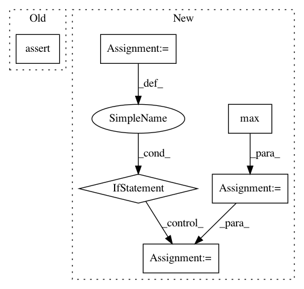

6378bc1c39228848a9114bcaac3fea25228d623d,skimage/feature/texture.py,,greycomatrix,#Any#Any#Any#Any#Any#Any#,14
Before Change
assert_nD(distances, 1, "distances")
assert_nD(angles, 1, "angles")
assert levels <= 256
image = np.ascontiguousarray(image)
assert image.min() >= 0
assert image.max() < levels
image = image.astype(np.uint8)
After Change
image = np.ascontiguousarray(image)
assert image.min() >= 0
image_max = image.max()
if levels is None:
// if levels is not given, we assume that there are [0, image_max -1] levels to
// be considered. There would be only zeros for all other rows and columns.
levels = image_max + 1
assert image_max < levels
// we cast to uint16 (because of fixed typing in cython)
// this has no impact on the size of the co-occurrence matrix.
In pattern: SUPERPATTERN
Frequency: 3
Non-data size: 6
Instances
Project Name: scikit-image/scikit-image
Commit Name: 6378bc1c39228848a9114bcaac3fea25228d623d
Time: 2016-05-20
Author: thomas.walter@mines-paristech.fr
File Name: skimage/feature/texture.py
Class Name:
Method Name: greycomatrix
Project Name: elbayadm/attn2d
Commit Name: 8798a24031f40a04c32118c6657f72a3c88819ea
Time: 2018-10-05
Author: lie@fb.com
File Name: fairseq/data/noising.py
Class Name: WordDropout
Method Name: noising